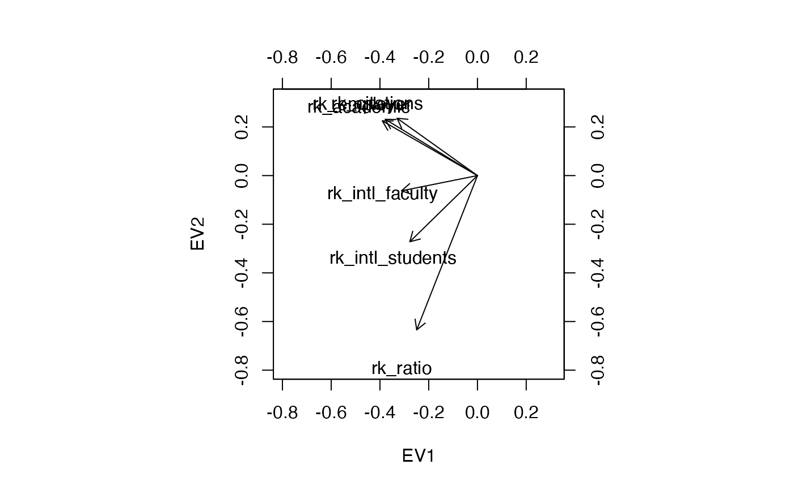

Classifications and rankings of U.S. universities for the years 2017–2020.
Usage
data(qswur_usa)Format
A tibble of 13 variables on 612 cases:
yearyear of rankings
institutioninstitution of higher learning
sizesize category of institution
focussubject range of institution
resresearch intensity of institution
ageage classification of institution
statusstatus of institution
rk_academicrank by academic reputation
rk_employerrank by employer reputation
rk_ratiorank by faculty–student ratio
rk_citationsrank by citations per faculty
rk_intl_facultyrank by international faculty ratio
rk_intl_studentsrank by international student ratio
References
Quacquarelli Symonds (2021) "University Rankings". TopUniversities.com https://www.topuniversities.com/university-rankings.
Examples
# subset QS data to rank variables
head(qswur_usa)
#> # A tibble: 6 × 13
#> year institution size focus res age status rk_academic rk_employer
#> <int> <chr> <fct> <fct> <fct> <int> <chr> <int> <int>
#> 1 2017 MASSACHUSETTS IN… M CO VH 5 B 6 4
#> 2 2017 STANFORD UNIVERS… L FC VH 5 A 5 5
#> 3 2017 HARVARD UNIVERSI… L FC VH 5 B 1 1
#> 4 2017 CALIFORNIA INSTI… S CO VH 5 B 23 90
#> 5 2017 UNIVERSITY OF CH… L FC VH 5 B 13 47
#> 6 2017 PRINCETON UNIVER… M CO VH 5 B 10 32
#> # ℹ 4 more variables: rk_ratio <int>, rk_citations <int>,
#> # rk_intl_faculty <int>, rk_intl_students <int>
qs_ranks <- subset(
qswur_usa,
complete.cases(qswur_usa),
select = 8:13
)
# calculate Kendall correlation matrix
qs_cor <- cor(qs_ranks, method = "kendall")
# calculate eigendecomposition
qs_eigen <- eigen_ord(qs_cor)
# view correlations as cosines of biplot vectors
biplot(x = qs_eigen$vectors, y = qs_eigen$vectors, col = c(NA, "black"))
